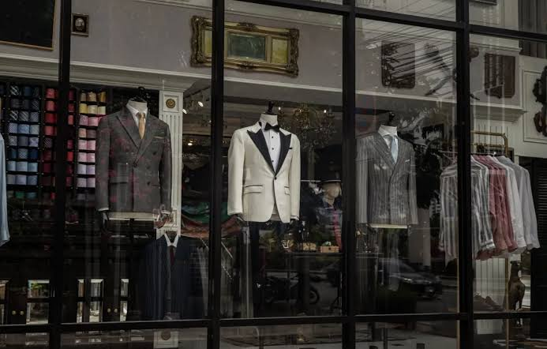

Welcome to the SuitYourself store!
We specialize in suits, ties, and all your fancy needs for suits!

Information about our company
We specialize in suits regardless of the price. We not only offer top tier suits, but also affordable ones also. We use only the finest materials for our products and we make sure that our customers are always satisfied. Our company originated in upstate New York City in 2001. Where our founder, John Marles started producing suits for his family, turning his small creations into large investments.
Our materials used in our products
Materials in our suits vary by the cost of the suit or how quickly the suit can be produced. We offer materials such as:
- Wool
- Cotton
- Linen
- Tweed & Fannel
- Silk
- Gem Infused